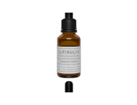

HYALURON SERUM SOARING STREAM
für straffe Haut

HYALURON SERUM SOARING STREAM
- Hoch- und niedermolekulare Hyaluronsäure
- Hymagic 4D Komplex für aufgepolsterte Haut von innen
- Natürliche Extrakte für eine starke Hautbarriere
SPARE €0
Probierpackung
20ml
€39,90
+ zzgl. €4,50 Versand
SPARE €40
3-er-Pack
Premiumkur 60ml
€79,90
€119,70
inkl. kostenloser Versand
AM BELIEBTESTEN
SPARE €80
5-er-Pack
Intensivkur 100ml
€119,9
€199,50
inkl. kostenloser Versand
Weniger Falten durch hoch- und niedermolekularen Anteile der Hyaluronsäure, die bis in die tiefen Hautschichten
Aufgepolsterte Haut durch den enthaltenen Hymagic 4D Komplex, der in der Haut eine dreidimensionale Struktur bildet, die die Haut von innen aufpolstert –für eine pralle, straffe Haut.
Gestärkte Hautbarriere durch die pflanzlichen Extrakte von Alpenrose und Edelweiss. Sie stärken auf natürliche Weise die Hautbarriere gegen äußere Einflüsse, wirken antibakteriell und antioxidativ – für eine weiche und trotzdem robuste Haut.

100 Tage Geld-Zurück-Garantie
Lorena
Einfach super!
In Sachen Hautpflegeprodukte habe ich schon einiges hinter mir und nur wenig hat sich in meine Routine eingefunden. Aber bei Soaring Stream hatte ich schon beim ersten Auftragen ein tolles Gef√ºhl auf der Haut und einen sofortigen, frischen und strahlenden Effekt. Habe es direkt in meine t√§gliche Routine aufgenommen ü•∞
Tamara
Angenehm auch bei sensibler Haut
Meine empfindliche Haut profitiert total von den natürlichen Extrakten in Soaring Stream und bekommt zudem reichhaltige Feuchtigkeit. Die Haut fühlt sich schon direkt nach dem Einmassieren ganz weich und zart an und ich habe das Gefühl, sie ist viel resistenter gegen äußere Einflüsse. Ich nutze es gern weiter und hab mir gleich die Vorratspackung bestellt!
Larissa
Tschüss Fältchen!
Finde es besonders bemerkenswert, dass sich die F√§ltchen um meine Augen deutlich zur√ºckziehen und meine Haut insgesamt viel glatter und praller wirkt. üëç Habe auch schon tolle Komplimente bekommen, ich bilde es mir also nicht ein üòÖ
Corinna
Viel straffer
Seit ich das Serum benutze ist meine Haut viel straffer geworden, das kann ich sehen, aber auch sp√ºren!!! ü§© Ganz toll, sie ist viel elastischer und dabei nutze ich es nur einmal am Tag! Klare Empfehlung!!!üíñ
Andrea
Feuchtigkeit ohne dass es fettet
Meine Haut war schon immer recht trocken und hat hochwertige Pflege gebraucht, allerdings bin ich an vielen Produkten gescheitert weil sie immer gleich zu stark gefettet haben und meine Haut eigentlich eher Feuchtigkeit brauchte. Soaring Stream ist da optimal, weil es ganz viel Feuchtigkeit in der Haut speichert, das merke ich richtig. Und meine Haut ist endlich nicht mehr so trocken und schuppig!
Was sagen unsere Kunden?
Wie du deine glatte und strahlende Haut zurück bekommst – in wenigen Wochen und ohne Aufwand, Behandlungen mit Nebenwirkungen oder Eingriffe in deine Lebensweise…
Deine besten Jahre liegen vor dir – nicht hinter dir!
Auch wenn die Zeit Spuren an der Haut hinterlässt, sei es durch die normale Hautalterung oder durch äußere Einflüsse.
SOARING STREAM enthält eine optimale Konzentration der hochwertigen Wirkstoffe Hyaluronsäure und Hymagic 4D, ergänzt durch natürliche Pflanzenextrakte von Edelweiss und Alpenrose.
Diese Kombination ist einzigartig und hat einen feuchtigkeitsspendenden, glättenden und aufpolsternden Effekt auf die Haut. Die natürlichen Extrakte pflegen zudem sanft – für eine strahlende und gesunde Haut.
Der Grund, warum diese Kombination so gut funktioniert, ist, dass die Wirkstoffe an der Wurzel, also tief in der Haut ansetzen, um diese von innen heraus zu glätten.
Diese Kombination an hochwertigen Zutaten haben wir für dich zusammengestellt, um deiner Haut eine optimale Pflege zu bieten.
Social Media Beiträge echter Kundinnen
Diese Bildschirmfotos und Bilder haben wir nach Rücksprache aus Facebook-Gruppen gesammelt
Sarna

Verifizierter Kauf
Habe schon das zweite Fl√§schchen angefangen‚Ķ das erste hat allerdings wirklich lange gehalten, weil man recht wenig davon ben√∂tigt um ein tolles gepflegtes Ergebnis auf der Haut zu sehen. Ich habe dieses Serum schon meiner besten Freundin zum Geburtstag geschenkt und sie ist auch ganz hin und weg von der tollen Feuchtigkeitspflege! ü•∞üíß
Christa
Verifizierter Kauf
Ich liebe dieses Serum!!! Hab das zweite Fläschchen schon fast leer und will nicht mehr ohne dieses Serum sein! Meine Haut ist viel elastischer und strahlt so richtig! DANKE für dieses super Produkt!!!
Collien
Verifizierter Kauf
Hallo ihr Lieben, ich habe jetzt das zweite Fl√§schchen begonnen und meine Haut freut sich f√∂rmlich t√§glich auf diese super Erfrischung! Ich kann auch wirklich Resultate sehen, meine Falten um die Augen und vor allem auch um den Mund sind schon viel weniger geworden. Und dieses pralle Gef√ºhl will ich nicht mehr missen!! Danke!! üòç
Anja
Verifizierter Kauf
Ich bin super happy mit diesem Serum, meine Haut hat in den letzten Monaten gefühlt einen richtigen Alterungsschub bekommen, ich habe täglich neue Falten entdeckt und war ganz überrascht, wie die Haut plötzlich schlaffer wird, dabei bin ich erst 32. Soaring Stream hat da einen tollen Dienst geleistet und mir meine Jugendlichkeit zurück gegeben, ich bin richtig erleichtert!
Kim
Verifizierter Kauf
Hey ihr! Ich wollte kurz teilen, wie glücklich ich mit dem Serum bin, ich hab jetzt schon fast zwei Fläschchen leer und meine Haut ist im Vergleich zu vorher nicht wiederzuerkennen! Sie ist viel glatter und strahlender! Ich bleibe dran!
Caroline
Verifizierter Kauf
Einfach klasse, wie das Serum die Feuchtigkeit in meiner Haut speichert! Das ist ein ganz neues Gef√ºhl, dabei bin ich noch an der ersten Flasche. Bin gespannt, was sich in den kommenden Wochen noch so tut. üëç
Petra
Verifizierter Kauf
Hi ich benutze das Serum jetzt seit ca. 4 Wochen und kann schon einen tollen Unterschied sehen. Davor war meine Haut oft uneben und trocken und daher wirkte sie schnell matt und fahl. Jetzt hat sie einen richtigen Glow und fühlt sich ganz sanft an. Ich bin begeistert!
Linn
Verifizierter Kauf
Ich habe mit dem Serum angefangen weil ich etwas mit natürlichen Extrakten haben wollte und da hat mich das mit den Pflanzen aus den Alpen besonders angesprochen. Der zarte Duft ist echt angenehm und auch die Wirkung finde ich gut: meine Haut fühlt sich viel glatter und praller an. Top!!
Jana
Verifizierter Kauf
Ein klasse Produkt, hatte davor oft Probleme mit allergischen Reaktionen, aber die pflanzlichen Extrakte sind ganz sanft und das Hyaluron spendet toll viel Feuchtigkeit, habe gerade die n√§chste Packung bestellt, dieses Mal gleich 5 Fl√§schchen, damit ich genug Vorrat habe üòÖ
Pauline
Verifizierter Kauf
Nutze das Serum schon l√§nger und mittlerweile nutzen es auch meine Schwester und meine Mutter, wir bestellen immer die gro√üe Vorratspackung f√ºr uns 3 üòÅ Wir sind quasi der Beweis, dass es sowohl f√ºr junge Frauen wie meine Schwester und mich, als auch f√ºr meine Mutter funktioniert. Wir lieben die Frische und die strahlende Haut üëç
Was steckt hinter den Inhaltsstoffen von SOARING STREAM?
Hyaluronsäure
Die menschliche Haut produziert eigenständig Hyaluron, diese Produktion nimmt aber mit zunehmendem Alter ab. Soll die Haut weiter frisch und elastisch sein, muss sie von außen zugeführt werden. Während hochmolekare Hyaluronsäure lediglich auf der Hautoberfläche bleibt und sich durch Schwitzen und mechanische Reize dort nicht lange hält, zieht niedermolekulare Hyaluronsäure in die tieferen Hautschichten ein. Dort bindet sie Wasser und hält die Haut befeuchtet. Die Hautzellen werden regelrecht mit wertvollem Bergquellwasser aufgefüllt, was das äußere Erscheinungsbild straffer und praller erscheinen lässt.
Hymagic 4D
Hymagic™ 4D ist eine Kombination aus vier Arten von Wasserstoff und kann ein dreidimensionales Netzwerk aufbauen bilden, mit dem es die verschiedenen Hautschichten genau anvisieren kann. So wird Feuchtigkeit von außen zugeführt und gleichzeitig von innen gespeichert. Auf diese Weise wird die Haut vollständig mit Feuchtigkeit versorgt, nachhaltig hydratisiert und ihre Elastizität direkt von innen verbessert.
Alpenrose
Die pflanzlichen Stammzellen der Alpenrose stärken nicht nur nachweislich die natürliche Hautbarriere und machen sie somit widerstandsfähiger gegen äußere Einflüsse, sondern verleihen unserer Hautpflege auch einen angenehmen natürlichen Geruch.
Edelweiss
Die Königin der Alpenblumen wächst üblicherweise auf 3.000 Metern Höhe, wo sie der Sonne, Wind, Schnee und kargem Boden trotzt. Das unter Naturschutz stehende Juwel wird für unsere Hautpflege gezüchtet und verfügt über antibakterielle, antiseptische und antioxidative Wirkung.
Testimonials
Wirklich toll
Seit ich Soaring Stream nutze, sind meine Hautprobleme wie verpufft. Meine Haut war oft trocken und schlaff, jetzt ist sie richtig prall und strahlt sogar, ohne zu fetten! Ich liebe den Effekt! Hab mich wortwörtlich lange nicht so wohl in meiner Haut gefühlt!
Aufpolsternder Effekt
Soaring Stream ist ein echter Gamechanger für meine Hautpflege, es ist wirklich überraschend wie schnell man den aufgepolsterten Effekt wahrnehmen kann und dabei fühlt sich die Haut einfach angenehm geschmeidig an. Ich bin super happy!!
Einfach WOW
Super Serum! Habe es auf Empfehlung meiner Freundin gekauft und es nicht bereut: Ich nutze bereits die zweite Flasche und will es nicht mehr hergeben!! Ganz klasse, wie das die Haut glatter macht, ich dachte nicht dass meine Fältchen nochmal weniger werden.. Jetzt bin ich vom Gegenteil überzeugt und auch der tolle Glow ist ein echtes Highlight!
Super Feuchtigkeit
Ich bin zwar erst 22 aber meine Haut ist mir sehr wichtig und Soaring Stream ist auf jeden Fall auch was für meine jüngere Haut, ich will gern den Falten ein wenig vorbeugen so gut es geht. Auch wenn ich noch nicht so viele habe, ist meine Haut total verändert. Sie ist viel strahlender und fühlt sich ganz toll an! Klare Weiterempfehlung!
Gut bei fahler Haut
Ich habe mich ziemlich ge√§rgert, dass meine Haut in den letzten Monaten so matt geworden ist und irgendwie h√§ngend aussah. Hab viel probiert, aber Soaring Stream war das einzige, was mich wirklich vorangebracht hat! Mein Mann hat sogar schon gefragt, was ich anders mache üòÖ wenn es sogar ihm auff√§llt.. Ich liebe dieses frische und pralle Gef√ºhl! Ich gehe mittlerweile sogar wieder ungeschminkt aus dem Haus, weil ich viel frischer aussehe und mich damit wohlf√ºhle!! Danke!!
Alpinulin Hyaluron Serum im Vergleich zu anderen Hyaluron Seren
Alpinulin
SOARING STREAM

3,12% hochwertige Hyaluronsäure inkl. Hymagic 4D Komplex
Feinste Moleküle dringen bis in die tiefste Hautschicht ein
Ohne Zusatzstoffe für eine super Verträglichkeit
Mit Hymagic 4D Komplex. Der die Haut von innen dreidimensional aufpolstert
ANDERE
Hyaluron Seren

Durchschnittlich nur 1-2% Hyaluronsäure
Oft zu große Moleküle, sodass die Wirkstoffe nicht richtig in die Haut eindringen können
Mit Zusatzstoffen, die der Haut und Umwelt schaden
Häufig nur Hyaluronsäure als Power-Stoff
Geld-zurück-Garantie
Jetzt risikofrei testen:
30 TAGE GELD-ZURÜCK-GARANTIE
Du erhältst eine 30 Tage Geld zurück Garantie auf eine Packung SOARING STREAM Serum.Klicke hier und erfahre mehr darüber!
Häufig gestellte Fragen
Hyaluronsäure ist eine natürliche Substanz, die im menschlichen Körper vorkommt und eine entscheidende Rolle für die Hautgesundheit spielt. Ihre vielfältigen Funktionen sind von großer Bedeutung.
Hyaluronmoleküle zeichnen sich durch ihre Fähigkeit aus, große Mengen Wasser zu binden – bis zu 1000-mal ihr eigenes Gewicht. Dadurch wird der Haut Feuchtigkeit, Volumen und Geschmeidigkeit verleihen, und es trägt dazu bei, dass die Haut prall und jugendlich aussieht.
Nur das Hyaluron-Serum von Alpinulin vereint all diese Vorteile:
- Niedermolekulare Hyaluronsäure für straffe Haut mit Soforteffekt
- Nachhaltige Anti-Falten-Wirkung
- Spendet intensive Feuchtigkeit
- Effektive und wissenschaftlich untersuchte Inhaltsstoffe für maximale Resultate
- Zieht direkt in die Haut ein und hinterlässt keinen klebrigen Film
- Höchste Qualitätsstandards
- Authentische und verifizierte Kundenrezensionen (4,8 Sterne)
- Einzigartige Rezeptur
- Vegan, plastik-, paraben- & silikonfrei
- Schneller Versand
Ja, gerade dann ist die Anwendung von Hyaluronsäure empfehlenswert, da die körpereigene Produktion bereits stark reduziert ist. Deine Haut wird es dir danken!
Nein. Unser Hyaluron-Serum erfüllt strengste Qualitätsstandards und es wurden keinerlei Nebenwirkungen festgestellt.
Das Serum wirkt für die Haut in jedem Alter.
Es gibt keine Studien, die belegen, dass eine einmalige Kur langfristige Ergebnisse erzielt. Da der Körper mit zunehmendem Alter die eigene Produktion von Hyaluron natürlicherweise reduziert, empfehlen wir eine regelmäßige Anwendung, um die besten Ergebnisse zu erzielen.
Viele Bewertungen und Erfahrungsberichte zeigen bereits nach wenigen Anwendungen sichtbare Veränderungen. Jedoch empfehlen wir eine Anwendungsdauer von mindestens 3 Monaten, um die Ergebnisse richtig beurteilen zu können. Unser Tipp: Dokumentiere deine Hautveränderungen durch regelmäßige Fotos für einen besseren Vergleich.